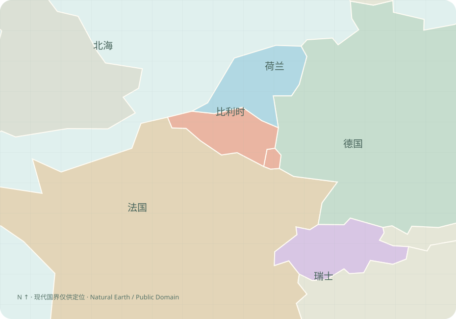

⚓ 河港｜交通与传播
地理提供聚会条件，也决定人和书怎样移动。以多德雷赫特河港与安特卫普流亡文书对读，可分辨人员迁徙与文本传播。
沿着场景记历史，沿着圣经辨教义。

现代定位图：Natural Earth 公共领域地理数据。历史思想网络及对应在线地图见双地图。
地理提供聚会条件，也决定人和书怎样移动。以多德雷赫特河港与安特卫普流亡文书对读，可分辨人员迁徙与文本传播。
莱顿的公开答辩由学术走向教会。核心不是信心是否必要，而是救恩中的信心究竟从哪里来。
联省议会召集会议，教会代表作教义判断。政治条件解释会议如何发生；条文仍要按经文与论证评估。
日内瓦诗篇与海德堡问答分别示范共同敬拜和长期教导。多特的分辨要回到牧养，尤其是良心软弱者的确据。
弗1:3–14从父的旨意写到子的救赎与灵的印记。多特 I.7 将信心与圣洁列为恩典的果效。把确据扎根于基督，勿从自己的表现倒推隐秘旨意。
耶31:31–34与来8–10把赦罪、内在更新与中保的祭相连。多特 II.3、5、8 分别处理代赎价值、普遍宣讲和有效救赎；三个问题不能用同一个量词代答。
结36:25–27和约3:5–8把新生命归于神。III/IV.11–12、16说明神主动更新，人因更新真实相信；重生不等于取消意志，恩典也不使宣讲多余。
约10:27–29给出牧者的应许；彼前1:5同时谈神的能力与信心。V.14把道、劝勉和圣礼纳入保守的途径。应许使劝勉有盼望，警告使人认真使用途径。
《比利时信条》22–24条区分信心领受基督与善行结果；《海德堡要理问答》60–65问把称义、信心及蒙恩途径连起来。《多特信经》细辨争议中的因果关系。圣约视角把应许、福音呼召和会众生活连起来；它不授权我们把外在归属直接等同于神隐秘的拣选。
CanRC：多特条文定位 · 比利时信条 · 海德堡要理问答
| 净读 | 主要任务 | 关键区别 | 读多特时的用处 |
|---|---|---|---|
| 使徒信经 | 以受洗认信的骨架记救恩历史 | 结构短，按父、子、圣灵展开；不应归为使徒集体逐字执笔 | 把拣选论放回创造、基督事件与复活盼望 |
| 尼西亚信经 | 辨明教会敬拜的子是谁 | 子与父同质；325年会议和后来通行的扩展文本须区分 | 救恩由真正的神子成就，不能把他降为受造的工具 |
| 亚他那修信经 | 训练三一论与基督论的精确表达 | 区分位格而不分割神性；区分二性而不分裂基督的位格；传统名称不等同于作者署名 | 同一位中保是真神真人，不能把赎罪讨论抽离基督的位格 |
记忆钩：使徒记故事，尼西亚守真神，亚他那修练分辨。三者同认三一神与救恩，分别提供教导骨架、公共辨界与精细语法。
简短认信足以帮助会众记忆，但遇到「子是不是受造者」「神人二性是否混合」等争议，教会需要更明确的共同表达。补充信经用更精确的词守护同一信仰。